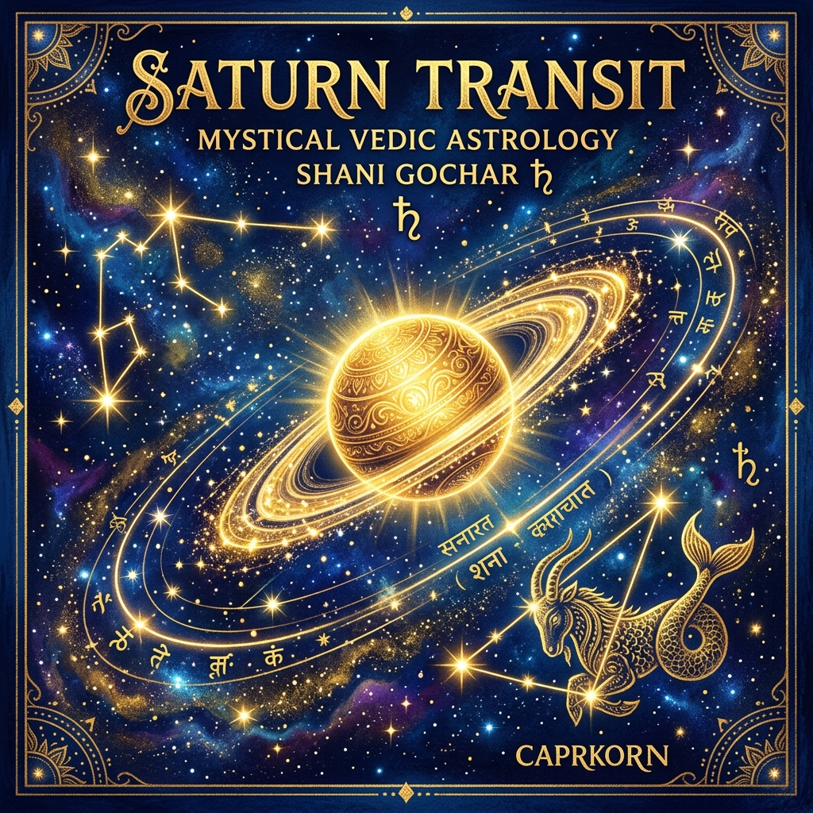
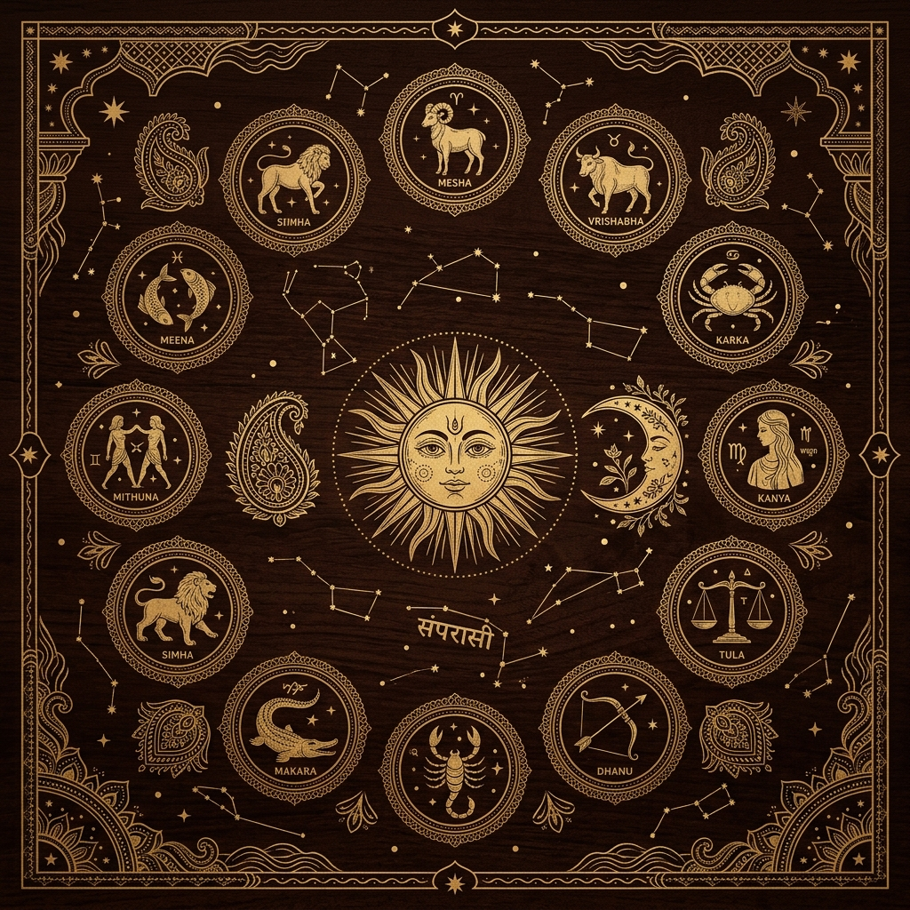
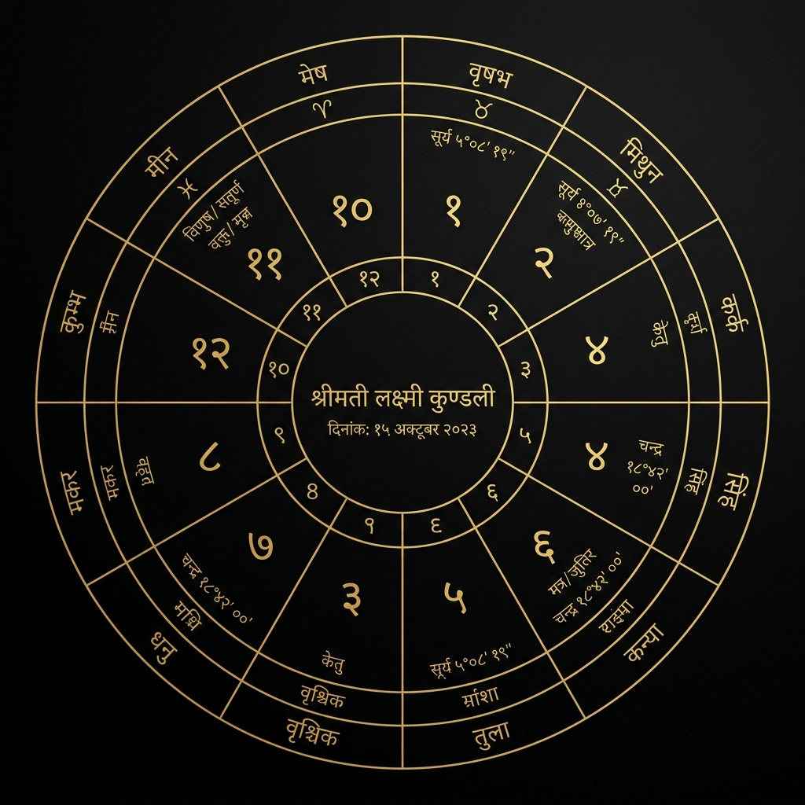

Insights & Knowledge
Weekly transits, festival remedies, and ancient Vedic wisdom for modern life.
Latest Articles
Stay informed with planetary movements, sacred festivals, and practical astrology tips.

Transit UpdateShani Dev's Rashi Parivartan: What It Means for Every Sign
Saturn is moving from Aquarius to Pisces in 2026. This once-in-30-years transit reshapes careers, health, and karmic debts...
◆ Read Full ArticleChaitra Navratri 2026: 9 Days, 9 Powerful Remedies
Navratri is the most auspicious period for removing planetary doshas. Each day corresponds to a specific goddess and planet...
◆ Read Full ArticleGemstone Guide: Which Ratna Should You Actually Wear?
Not every gemstone suits every person. Wearing the wrong stone can amplify malefic planets. Learn the Vedic science...
◆ Read Full Article Transit Update
Transit Update
Rahu-Ketu Axis Shift: The Shadow Planets Change Signs
The most feared transit in Vedic astrology. Understand what Rahu in Pisces and Ketu in Virgo means for your chart...
◆ Read Full Article
Vastu Tips5 Vastu Mistakes That Block Wealth in Your Home
Your home's energy flow directly affects prosperity. Common Vastu flaws and their instant fixes you can apply today...
◆ Read Full Article
Dosha GuideManglik Dosha: Myth vs Reality — A Scientific Analysis
Is Manglik Dosha really a marriage blocker? Break down the actual rules, exceptions, and cancellation yogas...
◆ Read Full Article